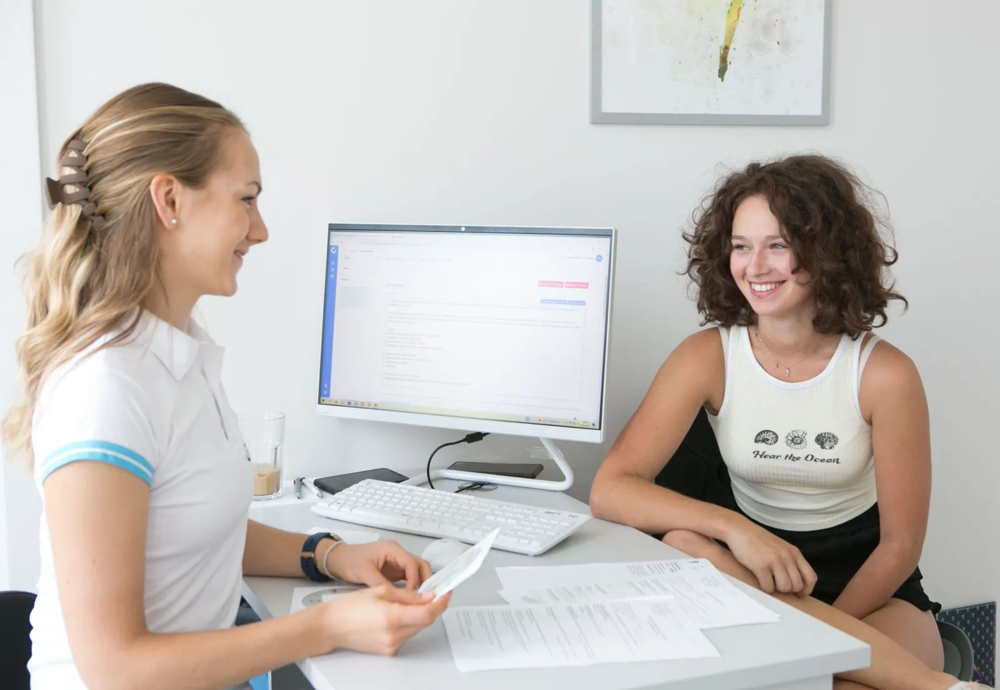
Diagnoza
Zaczynamy od ustalenia przyczyny bólu: szczegółowy wywiad, testy kliniczne i badanie USG w gabinecie.
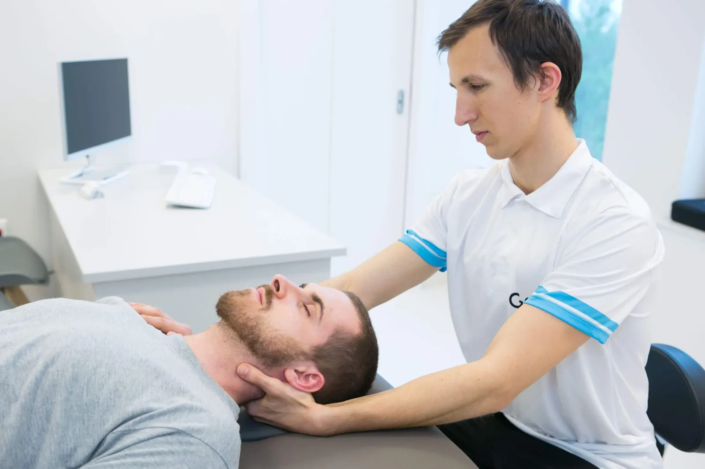
ul. Strzegomska 138, Wrocław · pn-pt 8:00-21:00
Ortopeda z USG, fizjoterapeuci i trenerzy pracują u nas jednym zespołem: od diagnozy, przez leczenie, do pełnej sprawności. Rezonans magnetyczny jest w tym samym budynku.
Pierwsza wizyta u fizjoterapeuty -25% z hasłem „zniżka na pierwszą wizytę”
Prowadzimy pacjenta przez cały proces leczenia narządu ruchu. Wybierz etap, na którym jesteś - a jeśli nie wiesz, od czego zacząć, zadzwoń. Pomożemy wybrać specjalistę.

Zaczynamy od ustalenia przyczyny bólu: szczegółowy wywiad, testy kliniczne i badanie USG w gabinecie.
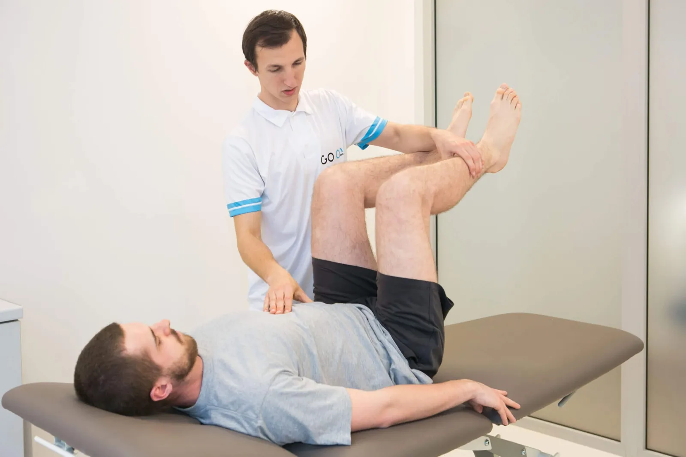
Terapia manualna, ćwiczenia i zabiegi ortopedyczne dobrane do rozpoznania - zawsze pod nadzorem specjalisty, który zna diagnozę.
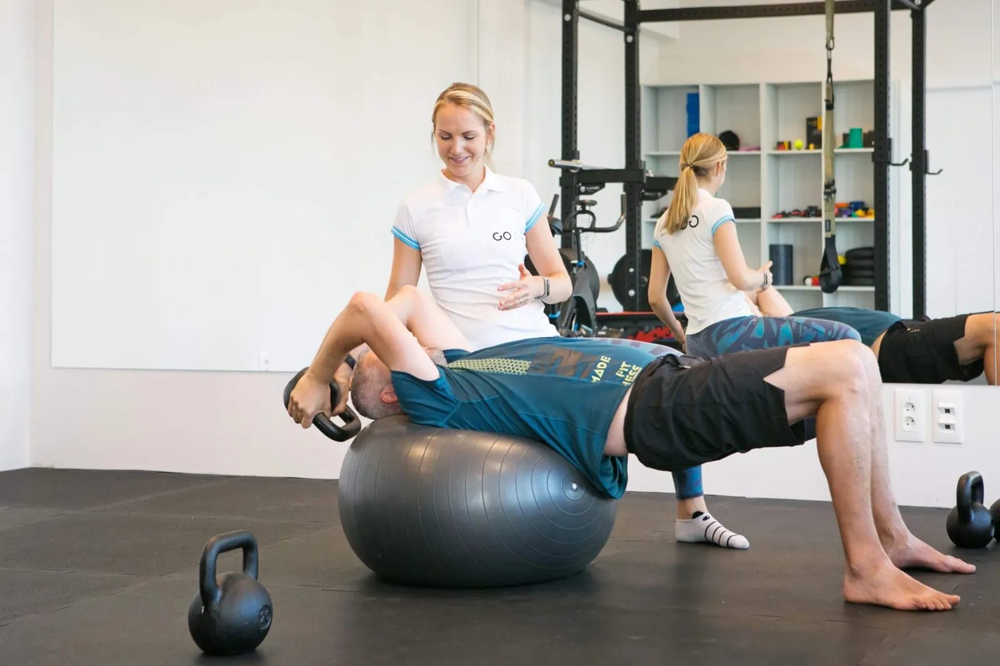
Gdy ból minął: regularna kontrola, trening personalny i przegląd zdrowotny przed sezonem lub wyjazdem.
Chcemy maksymalnie skrócić czas od urazu do trafnej diagnozy. Podczas konsultacji ortopeda przeprowadza wywiad, testy ortopedyczne, badanie palpacyjne i USG - wynik omawia z Tobą od razu w gabinecie.
Jeśli potrzebny jest rezonans, partnerska pracownia ULTRA MR działa na parterze tego samego budynku. Aparat Siemens MAGNETOM Spectra 3T, a z gotowym badaniem wracasz do ortopedy w ciągu kilkudziesięciu minut.
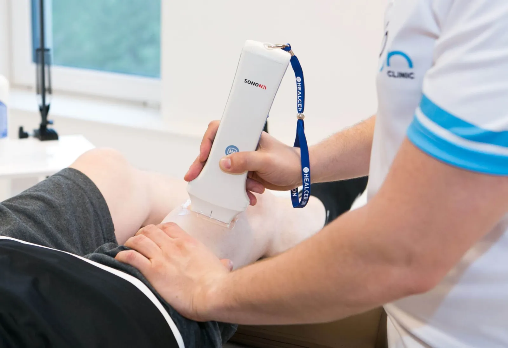
Gdy najlepszym wyjściem jest zabieg, lekarze ortopedzi dobierają metodę nieoperacyjną - najczęściej iniekcję w miejsce bólu. Przed zabiegiem lekarz analizuje Twoją dokumentację medyczną.
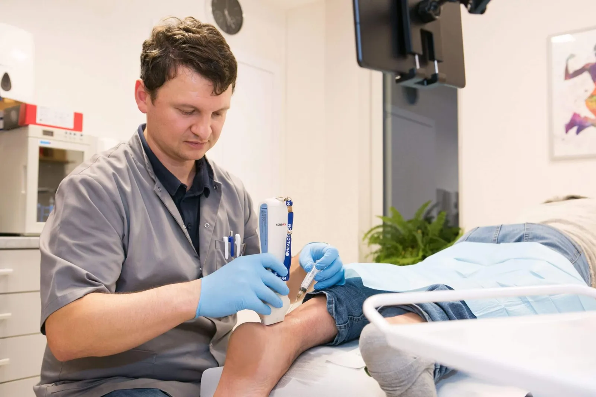
Osocze bogatopłytkowe z Twojej krwi, z 4-5 razy większym stężeniem płytek. Działa przeciwzapalnie i przeciwbólowo, m.in. przy kolanie skoczka i łokciu tenisisty.
850-1150 zł
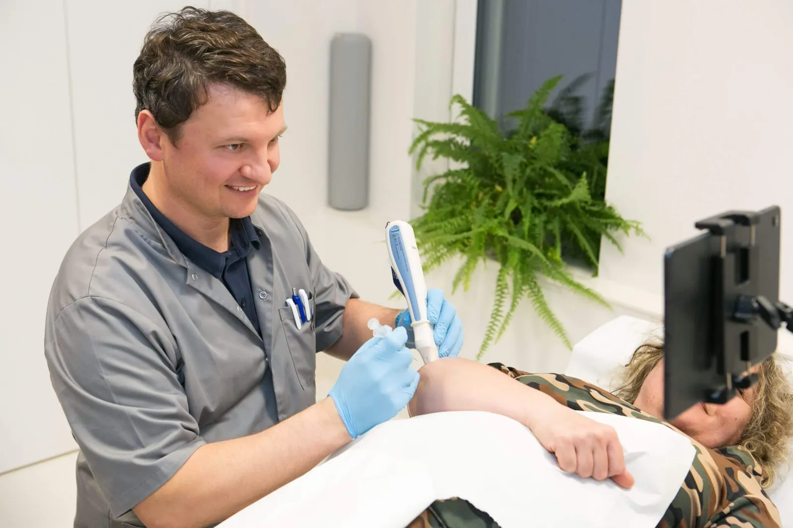
Preparat autologiczny, w którym z krwi pacjenta powstają białka ochronne. Przy chorobie zwyrodnieniowej, po rekonstrukcji ACL, przy tendinopatiach i entezopatiach.
1000-6000 zł, zależnie od stawu
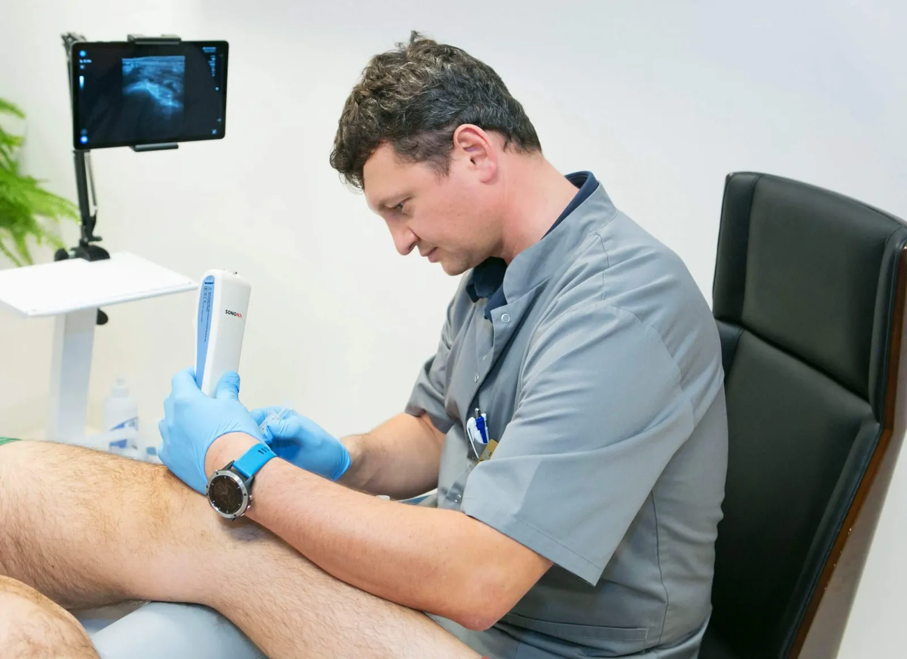
Uzupełnia maź stawową, której z wiekiem ubywa. Najlepiej sprawdza się w początkowej fazie choroby zwyrodnieniowej stawów.
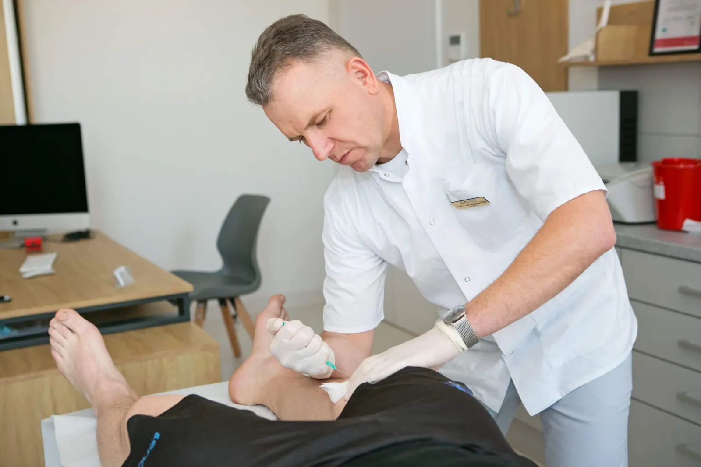
Lek znieczulający z lekiem sterydowym przy przetrwałych stanach zapalnych i silnym bólu stawów lub kręgosłupa. Stosowane, gdy korzyści przeważają nad ryzykiem.
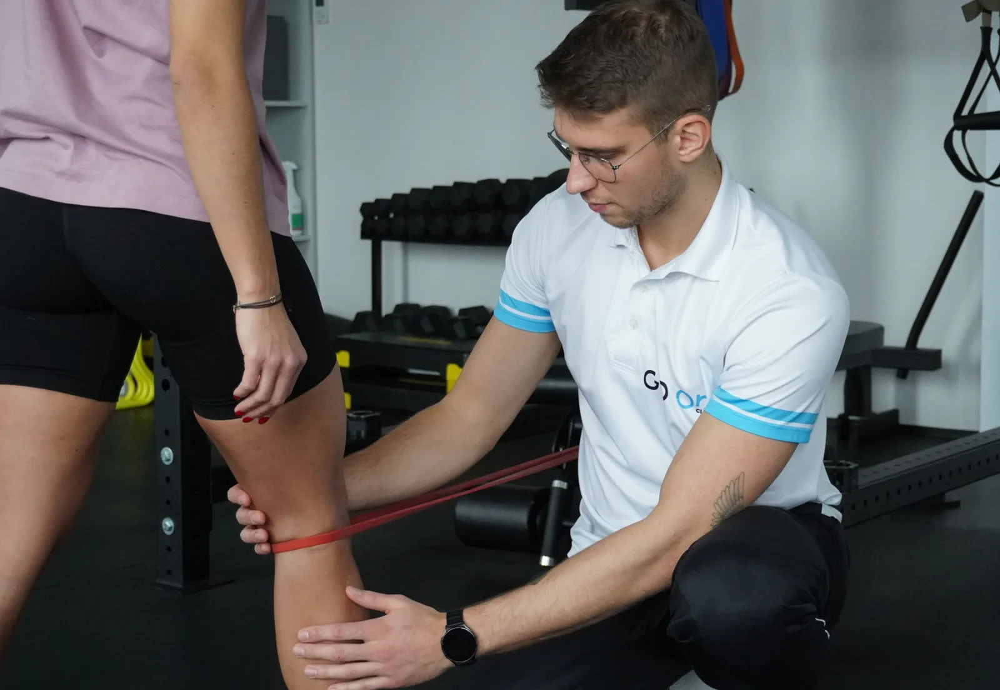
Plan ćwiczeń układa fizjoterapeuta - z uwzględnieniem przebytych kontuzji, osłabień mięśni i Twoich celów. Ćwiczysz na wyposażonej sali w klinice, a specjalista pilnuje prawidłowych wzorców ruchu, żeby trening nie wywołał nowych dolegliwości.
Trenujemy osoby po urazach i operacjach, przygotowujące się do maratonu, triathlonu czy sezonu, a także tych, którzy po prostu chcą o siebie zadbać. Na sesję możesz przyjść z jedną lub dwiema osobami.
Zabierz wygodny strój sportowy. Butów nie potrzebujesz - na sali ćwiczy się w skarpetkach lub boso.
Dlaczego po kontuzji trenować z fizjoterapeutąLekarze ortopedzi i specjalista rehabilitacji medycznej oraz fizjoterapeuci, którzy pracowali z drużynami sportowymi Wrocławia.
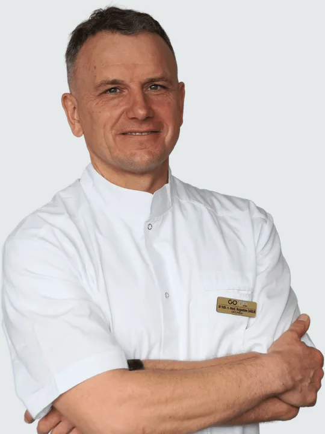
prof. WSF dr hab. n. med. Bogusław SadlikOrtopeda. Twórca techniki suchej artroskopii, w latach 2016-2018 prezydent Polskiego Towarzystwa Stopy i Stawu Skokowo-Goleniowego.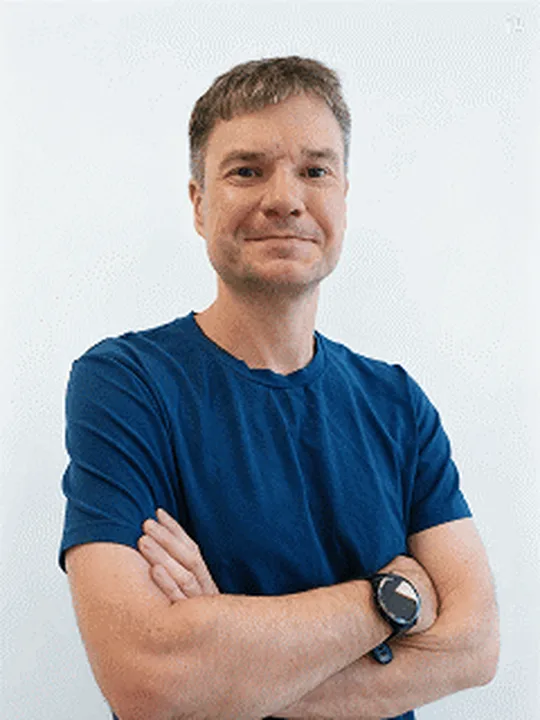
lek. Marek ZegzdrynOrtopeda i magister fizjoterapii. Bark i kolano, specjalizacja w Norwegii, IOC Sports Medicine Diploma.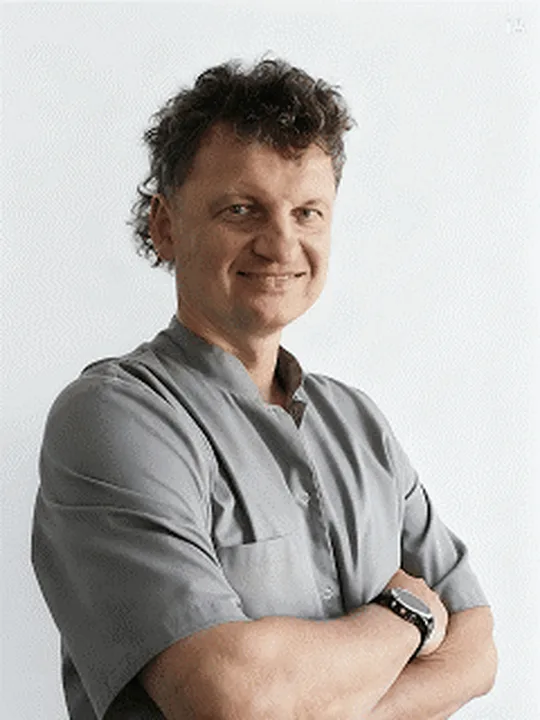
lek. Paweł GackiOrtopeda. Artroskopia kolana, stopa i staw skokowy, zabiegi sonochirurgiczne pod kontrolą USG.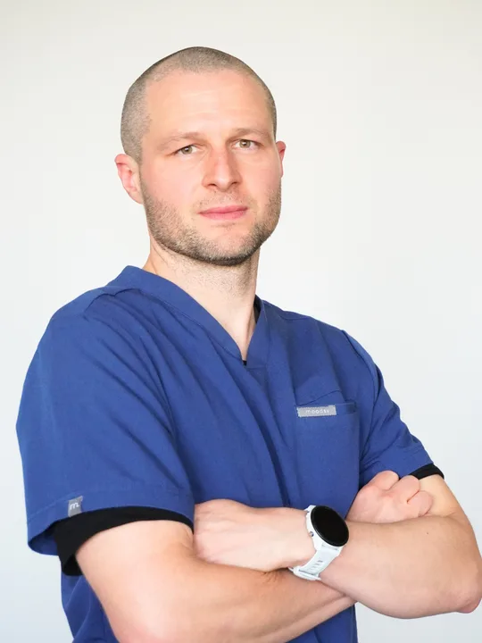
lek. Maciej BeszłejOrtopeda. Chirurgia artroskopowa i chirurgia barku, urazy i przeciążenia u sportowców.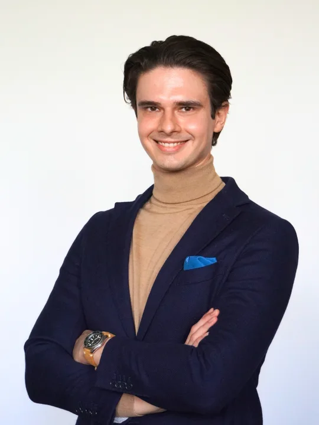
lek. Maciej KlocOrtopeda. Choroba zwyrodnieniowa kolana i biodra, urazy łąkotek i więzadeł, ortobiologia.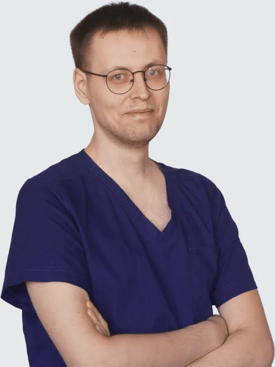
lek. Maciej BrzykSpecjalista rehabilitacji medycznej. Iniekcje PRP i Orthokine pod kontrolą USG, kolano, biodro, kręgosłup.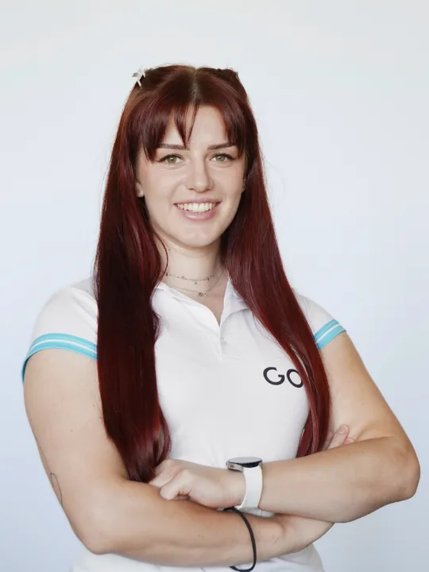
mgr Joanna SochaFizjoterapeutka, trenerka motoryczna i dietetyczka. Stopa, staw skokowy i kolano, rehabilitacja pooperacyjna.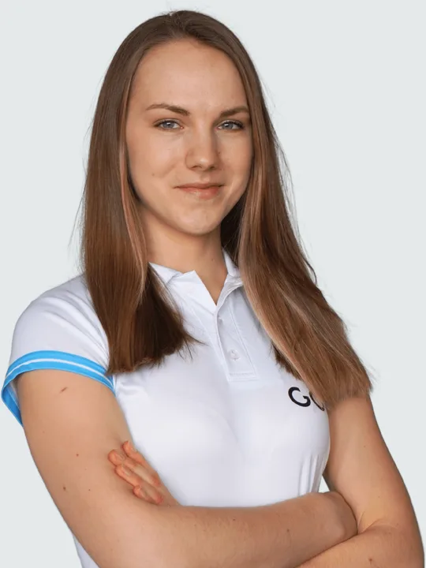
Julita Dorociak-KowalskaFizjoterapeutka i trenerka motoryczna. Fizjoterapia w sporcie, wcześniej w WKS Śląsk Wrocław.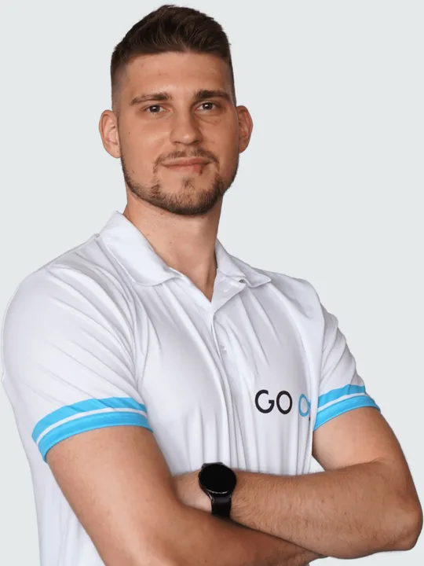
mgr Kamil SokołowskiFizjoterapeuta. Rehabilitacja po operacjach kolana, terapia sportowa i bóle kręgosłupa.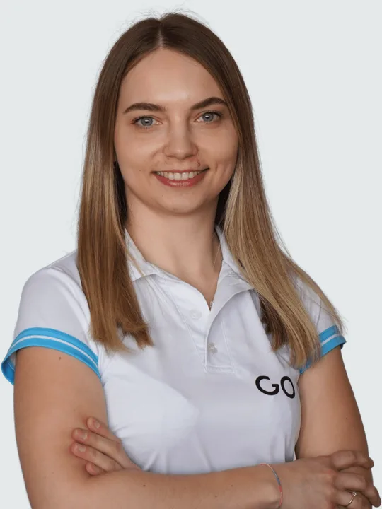
mgr Paulina Szopińska-SzcześniakFizjoterapeutka i trenerka personalna. Po rekonstrukcji ACL i szyciu łąkotki, urazy przeciążeniowe.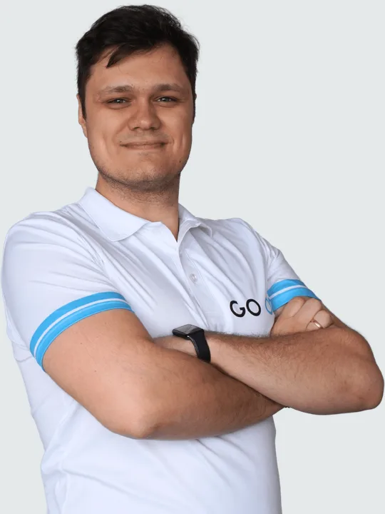
Przemysław BiegańskiFizjoterapeuta. Terapia manualna powięzi, kinezyterapia i trening.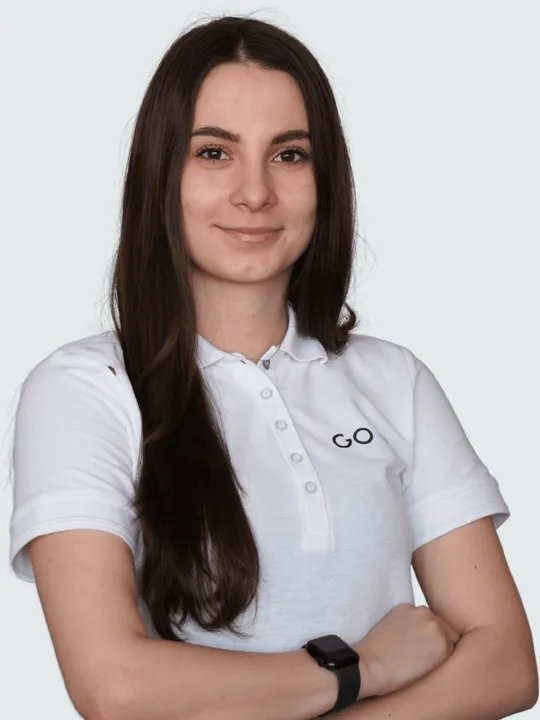
mgr Dominika KlubaFizjoterapeutka uroginekologiczna. Kobiety w ciąży, po porodzie i w okresie menopauzy.„Nowoczesna ortopedia i profesjonalna fizjoterapia. Współpraca specjalistów z tych dwóch dziedzin sprawia, że podejście do pacjenta jest kompleksowe i skuteczne.”
„Po urazie ACL uczestniczyłam w ośmiomiesięcznej rehabilitacji. (...) Nie tylko wróciłam do gry w siatkówkę, ale jestem nawet sprawniejsza niż przed urazem.”
„Od 5 tygodni uczęszczam regularnie na fizjoterapię po operacji kolana. (...) Placówka wyposażona w gabinety masażu i salę do ćwiczeń.”
Wizyty u fizjoterapeuty, osteopaty i treningi trwają do 50 minut. Pierwsza wizyta u fizjoterapeuty z hasłem „zniżka na pierwszą wizytę” jest tańsza o 25%.
Podane ceny nie stanowią oferty handlowej w rozumieniu art. 66 § 1 Kodeksu cywilnego.
Nie znalazłeś odpowiedzi? Zadzwoń pod 530 30 50 40 albo napisz na kontakt@goonclinic.pl.
Pierwsza wizyta może odbyć się u ortopedy albo u fizjoterapeuty - zależy to od rodzaju dolegliwości. Fizjoterapeuta przeprowadzi badanie kliniczne i w razie potrzeby skieruje Cię do ortopedy na miejscu. Można też umówić wizytę jednocześnie u obu specjalistów.
Wizyta u fizjoterapeuty, osteopaty i trening trwają do 50 minut. Konsultacja ortopedyczna trwa 20-30 minut.
Wynik badania USG lekarz przedstawia od razu podczas wizyty. Badanie nie wymaga specjalnego przygotowania.
Przez 2-3 dni przed zabiegiem pij ponad 2 litry wody dziennie, a na 3 dni przed zabiegiem nie przyjmuj niesteroidowych leków przeciwzapalnych (NLPZ). Zabierz dokumentację medyczną.
Wystarczy wygodny strój sportowy. Obuwie nie jest potrzebne - na sali ćwiczy się w skarpetkach lub boso.
Wjazd na parking dla klientów jest od ulicy Babimojskiej. Przy szlabanie naciśnij na domofonie przycisk GO ON CLINIC. Klinika mieści się na IV piętrze.
Szkolimy fizjoterapeutów, studentów fizjoterapii i lekarzy ortopedów z diagnostyki, rehabilitacji pooperacyjnej i interpretacji badań MRI i USG. Każde szkolenie ma część case study z udziałem prawdziwych pacjentów.
Pierwszą edycję dwudniowego szkolenia „Stopa” poprowadziły mgr Joanna Socha i lek. Marcelina Caban.
Szkolenia i zapisy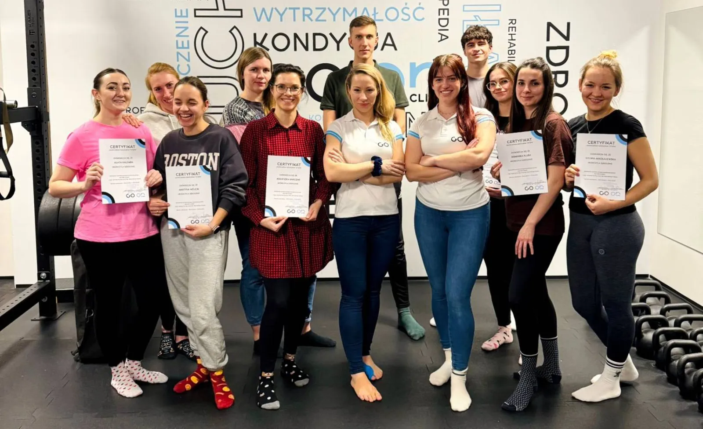
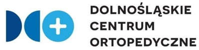
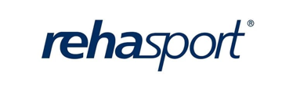
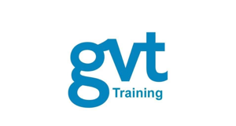
Część specjalistów przyjmuje również przy ul. Nowowiejskiej 5, 50-314 Wrocław.
Rejestracja onlineWjazd od ulicy Babimojskiej, przy tabliczce „Parking dla klientów”. Pod szlabanem naciśnij na domofonie przycisk GO ON CLINIC i poczekaj kilka sekund.
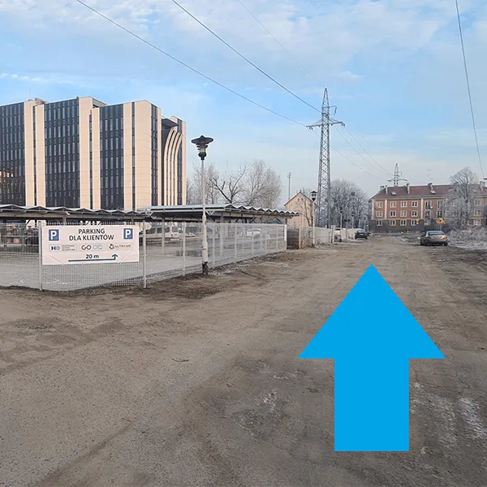
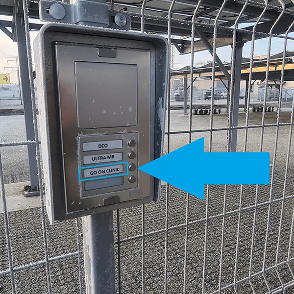
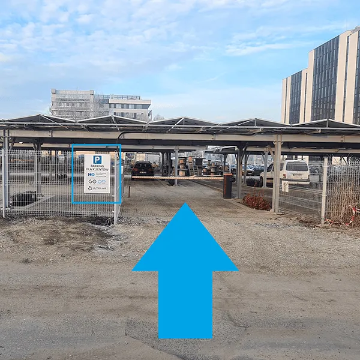